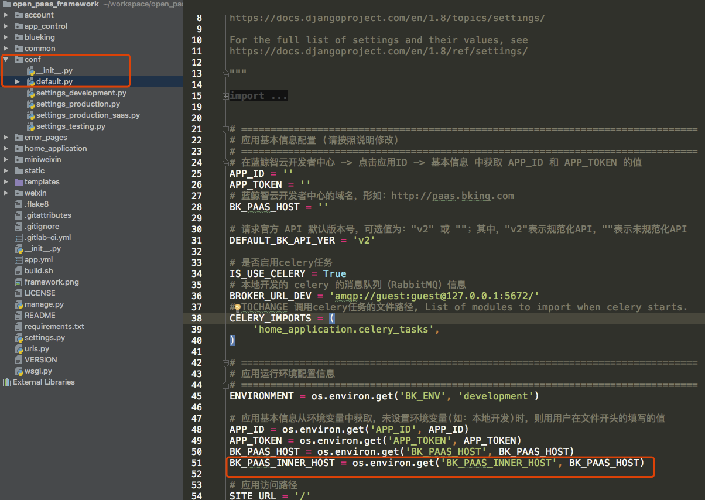

蓝鲸全站 HTTPS 改造方案
思路
open_paasnginx 配置 HTTPS。内部接口 统一走 HTTP。
涉及前端跳转 统一走 HTTPS。
运维同学关注 open_paas 部署相关
Nginx
申请得到 HTTPS 证书，并配置
以下实例仅供参考(测试环境使用)，具体生产配置请重新确认
# http 自动跳转 https
server {
listen xxxx:80;
server_name paas.bk.com;
return 301 https://$server_name$request_uri;
}
server {
listen xxxx:443 ssl;
server_name paas.bk.com;
access_log /data/bkce/logs/nginx/openpaas_access.log;
error_log /data/bkce/logs/nginx/openpaas_error.log;
client_max_body_size 512m;
ssl on;
ssl_certificate /data/bkce/cert/bk_domain.cert;
ssl_certificate_key /data/bkce/cert/bk_domain.key;
ssl_protocols TLSv1 TLSv1.1 TLSv1.2;
ssl_ciphers HIGH:!aNULL:!MD5;
# ============================ paas ============================
# PAAS_SERVICE HOST/PORT
location / {
proxy_pass http://SSL_OPEN_PAAS;
proxy_pass_header Server;
proxy_set_header X-Forwarded-For $proxy_add_x_forwarded_for;
proxy_set_header X-Real-IP $remote_addr;
proxy_set_header X-Scheme $scheme;
proxy_set_header Host $http_host;
proxy_redirect off;
proxy_read_timeout 600;
}
.........
}
open_paas 的部署
open_paas 的项目 paas/esb/login/console/appengine，增加了一个环境变量 PAAS_INNER_DOMAIN。
PAAS_DOMAIN = '__PAAS_FQDN__:__PAAS_HTTPS_PORT__'
PAAS_INNER_DOMAIN = '__PAAS_HOST__:__PAAS_HTTP_PORT__'
需要确保
PAAS_DOMAIN是外网地址，即到nginx的地址。PAAS_INNER_DOMAIN是内网地址，即到consul的地址。
此时，给到 saas 的环境变量都是https。
BK_PAAS_HOST = "https://%s" % settings.PAAS_DOMAIN
BK_CC_HOST = "https://%s" % settings.HOST_CC
BK_JOB_HOST = 'https://%s' % settings.HOST_JOB
BK_PAAS_INNER_HOST = "http://%s" % settings.PAAS_INNER_DOMAIN
其他平台部署
需要提供，是的依赖方自行决定使用内部 or 外部域名。
PAAS_DOMAIN外部 https，nginx。PAAS_INNER_DOMAIN内部 http，consul。
SaaS 开发者关注 开发框架 改造
conf/default.py
新增一个配置：conf/default.py 文件中大概 50 行处 BK_PAAS_HOST = os.environ.get('BK_PAAS_HOST'，BK_PAAS_HOST) 的后面添加
BK_PAAS_INNER_HOST = os.environ.get('BK_PAAS_INNER_HOST',BK_PAAS_HOST)
此时，本地开发，没有 BK_PAAS_INNER_HOST 会走 BK_PAAS_HOST，走 https ; 在 PaaS 中部署，有这个环境变量，会走内网 http。

blueking/component/conf.py
blueking/component/conf.py 文件中大概 11 行处修改变量
组件调用， 将 COMPONENT_SYSTEM_HOST 修改为 INNER_HOST
COMPONENT_SYSTEM_HOST = getattr(settings'BK_PAAS_INNER_HOST'settings.BK_PAAS_HOST)

account/accounts.py
account/accounts.py 文件中大概 34 行处修改变量，修改登录访问地址依赖 BK_PAAS_INNER_HOST
BK_LOGIN_VERIFY_URL = "%s/login/accounts/is_login/" % getattr(settings,'BK_PAAS_INNER_HOST',settings.BK_PAAS_HOST)
BK_GET_USER_INFO_URL = "%s/login/accounts/get_user/" % getattr(settings,'BK_PAAS_INNER_HOST',settings.BK_PAAS_HOST)

[ESB 调用方关注] API 网关用户 HTTPS 改造方案
API 网关 API 提供外部 HTTPS、内部 HTTP 两个协议，（内部表示与 API 网关部署在同一个环境，可使用同一个内部域名解析服务）。
直接通过 URL 访问组件的情况
通过 HTTPS 协议访问，使用 HTTPS 外部域名，Python 程序使用 reqeusts 包时，请求参数需添加 verify=False。
通过 HTTP 协议访问，服务需要与 API 网关部署在同一环境，使用内部新域名即可，其他不需要变动。
注意：
本地开发测试，需使用 HTTPS 协议。
脚本等不确定服务器的场景，需使用 HTTPS 协议。
JOB、CC 等第三方系统，如果正式环境与 ESB 部署在同一环境，服务器可以解析内部域名，可以使用 HTTP 协议。
SaaS 使用组件 SDK 的情况
- 检查 blueking/component/client.py BaseComponentClient.request 方法中，requests.request 包含 verify=False 参数。
return requests.request(method,url,params=params,data=data,verify=False,headers=headers,**kwargs)
- 配置更新(可选，以下配置，SaaS 正式环境会使用内部域名访问组件)。
conf/default.py
BK_PAAS_INNER_HOST = os.environ.get('BK_PAAS_INNER_HOST',BK_PAAS_HOST)
blueking/component/conf.py
COMPONENT_SYSTEM_HOST = getatrr(settings,'BK_PAAS_INNER_HOST',settings.BK_PAAS_HOST)
- 本地开发: 例如 saas/ 脚本，依赖线上服务地址，务必将依赖地址改成
https，否则nginx会自动将http转 301 至https，参数信息会丢失，导致请求异常。
[依赖登录关注] 其他登录系统
内部调用走 PAAS_INNER_DOMAIN(内部 consul 地址)，需要跳转(例如登录跳转)走PAAS_DOMAIN(因为是在用户浏览器上跳转的)。
配置
PAAS_DOMAIN及PAAS_INNER_DOMAIN两个地址(需运营组给到替换变量)。访问
/login/accounts/is_login/及/login/accounts/get_user及 ESB 等，走PAAS_INNER_DOMAIN。登录跳转走
PAAS_DOMAIN。